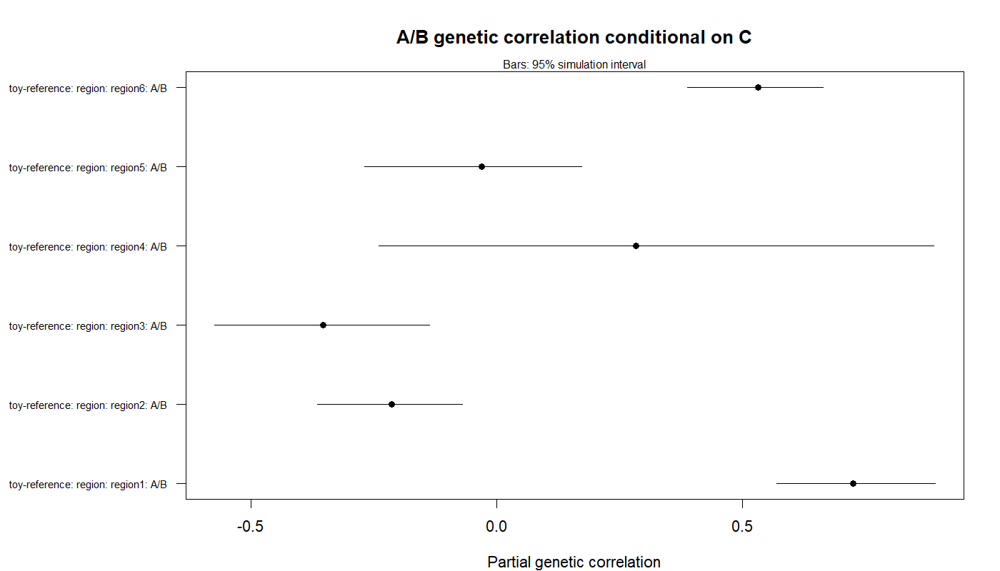

From a saved LD reference to genetic analysis
This example uses artificial data supplied with gsuite: 96 reference individuals, 48 markers in six regions and three continuous-trait summary datasets. It demonstrates the complete workflow on a tiny analysis universe, not a realistic genome-wide study or a test of statistical calibration. The method guide explains assumptions and the capability table lists support.
Run the blocks in order in a development installation of gsuite. They write only to build/examples/summary-statistic-workflow/, relative to the working directory. Running them again reuses the saved LD reference.
Read the supplied inputs
library(gsuite)
input <- system.file("extdata", "summary-statistic", package = "gsuite")
stopifnot(nzchar(input))
out <- file.path("build", "examples", "summary-statistic-workflow")
dir.create(out, recursive = TRUE, showWarnings = FALSE)
observed <- read.delim(file.path(input, "statistics.tsv"))
categories <- read.delim(file.path(input, "annotation.tsv"))
annotation <- as.matrix(categories[c("baseline", "category")])
rownames(annotation) <- categories$marker
regions <- split(observed$marker, observed$region)
traits <- c("A", "B", "C")
stat <- setNames(lapply(traits, function(trait) {
data.frame(marker = observed$marker, z = observed[[trait]],
n = observed$n, block = observed$region)
}), traits)All markers and alleles are already aligned. For real studies, alignment is a separate task. The six regions also serve as toy jackknife blocks; six blocks are too few for a well-supported genome-wide uncertainty analysis. Block design and LD-reference suitability need scientific justification in a real study.
Prepare LD once
saved <- file.path(out, "LDlist.rds")
source_files <- file.path(input, c("reference.bed", "reference.bim",
"reference.fam", "annotation.tsv"))
source_md5 <- unname(tools::md5sum(source_files))
if (!file.exists(saved)) {
# Work on copies; the installed example data are never removed.
copies <- file.path(out, basename(source_files[1:3]))
stopifnot(all(file.copy(source_files[1:3], copies, overwrite = TRUE)))
Glist <- gprep(bedfiles = copies[1])
LD <- ldprep(Glist, reference = "toy-reference", task = "sparseld",
out_prefix = file.path(out, "reference-LD"),
max_distance_bp = 0, max_distance_variants = 8,
r2 = 0, nthreads = 1, overwrite = TRUE)
LD <- ldprep(LDlist = LD, task = "scores", annotation = annotation)
for (region in names(regions)) {
LD <- ldprep(LDlist = LD, task = "eigen", markers = regions[[region]],
region_name = region)
}
attr(LD, "example_source_md5") <- source_md5
saveRDS(LD, saved)
rm(Glist, LD)
stopifnot(all(file.remove(copies)))
}
LD <- readRDS(saved)
validate_LDlist(LD)
stopifnot(identical(attr(LD, "example_source_md5"), source_md5))
stopifnot(identical(stat$A$marker, LD$resource$markers$marker_id))
reference_before <- tools::md5sum(unlist(LD$resource$paths))The LD files must remain at their recorded paths. Genotype input files are no longer needed by the analysis. Full regional eigensystems are saved once; methods verify and reuse them, applying their own component-selection rules. Here all within-region correlations are retained. Chromosome-local construction excludes between-region LD; this is an explicit assumption of this toy example. If example inputs change, use a new output directory rather than reusing an old reference. The input fingerprint guards against accidental stale reuse.
Genome-wide h2 and genetic correlation
# The simulation has no marginal inflation and independent sampling errors.
genome_h2 <- gcorr(stat, LD, method = "ldsc", task = "h2",
control = list(intercept = "fixed_one"))
genome_rg <- gcorr(stat, LD, method = "ldsc", task = "rg",
control = list(intercept = "fixed_one", overlap_intercept = 0))
summary(genome_h2)
summary(genome_rg)
genome_rg$matrices[[LD$reference]]$reference$all$rg
plot(genome_rg)“Genome-wide” here means the complete 48-marker analysis universe. Fixed intercepts are justified by the data generator, not recommended as universal defaults. gcorr() otherwise estimates LDSC intercepts. Check estimates, uncertainty and diagnostics together; a point estimate alone is not evidence of a nonzero genetic correlation.
For the bundled data, the genome-wide h2 estimates are approximately:
| Trait | h2 | Jackknife SE |
|---|---|---|
| A | 0.209 | 0.075 |
| B | 0.640 | 0.334 |
| C | 0.270 | 0.084 |
The wide uncertainty for B illustrates why a small example should not be used to assess estimator accuracy. These are results for the fixed artificial input, not target values that a real dataset should reproduce.
Partition by annotation
partitioned <- gcorr(stat, LD, annotation = annotation,
method = "ldsc", task = "h2",
control = list(intercept = "fixed_one"))
partitioned$estimates
plot(partitioned, scope = "annotation_category")
partitioned$details[partitioned$details$quantity == "tau", ]
# The same columns can instead define SumHer architecture components.
architecture <- gcorr(stat, LD, annotation = annotation,
method = "sumher", task = "rg",
control = list(tagging = ld_scores(LD), overlap_intercept = 0))
architecture$matrices[[LD$reference]]$architecture_componentThe subset overlaps the baseline, so category heritabilities must not be added together. In SumHer the columns define model components, a different estimand. Ordinary LD scores are an explicit illustrative choice of tagging weights; tagging and model-weighted scores are separate inputs. Differences between LDSC and SumHer on these data do not identify which estimator is preferable.
Regional analysis
# Region methods do not use score-method jackknife labels.
regional_stat <- lapply(stat, function(s) s[c("marker", "z", "n")])
sampling <- diag(length(traits))
dimnames(sampling) <- list(traits, traits)
regional_control <- list(sampling_correlation = sampling,
explained_ld_fraction = 1)
regional <- gcorr(regional_stat, LD, regions = regions,
method = "lava", task = "rg", control = regional_control)
summary(regional)
regional$matrices[[LD$reference]]$region$region1$cov
plot(regional)All traits share one fit per region. The identity sampling-correlation matrix matches the independent noise columns in the generator. It must be replaced by an appropriate overlap model for real data. This call provides point estimates and univariate screening; it does not request bivariate simulation inference. An rg plot without bars therefore does not imply exact estimation.
Conditional relationships
conditional_control <- regional_control
conditional_control$inference <- list(seed = 42, pvalue_draws = 2000,
interval_draws = 2000)
partial <- gcorr(regional_stat, LD, regions = regions,
method = "lava", task = "partial_rg",
targets = c("A", "B"), conditioned_on = "C",
control = conditional_control)
regression <- gcorr(regional_stat, LD, regions = regions,
method = "lava", task = "regression",
outcome = "A", predictors = c("B", "C"),
control = conditional_control)
summary(partial)
plot(partial)
regression$estimates
regression$details[regression$details$quantity %in%
c("r_squared", "explained_genetic_variance"), ]
vapply(partial$diagnostics, function(d) d$inference$pvalue_precision_met,
logical(1))Partial rg asks about the A/B genetic relationship conditional on C. Regression predicts the regional genetic component of A from B and C. Neither establishes causality. Inference checks native eligibility and conditioning requirements; unavailable results remain missing with reasons.
The small simulation budgets keep this example quick. Inspect Monte Carlo precision, retained draws and budget flags before interpreting p-values or intervals. A very small reported p-value can still have inadequate Monte Carlo precision. These intervals have no simultaneous coverage or automatic multiple-testing correction.

In this run, the p-value precision target is met for regions 4 and 5, but not for regions 1, 2, 3 and 6. A small p-value does not remove the need to inspect its Monte Carlo diagnostics. The figure illustrates the workflow rather than establishing significance, calibration or a causal relationship.
Save the analysis and verify reuse
fits <- list(genome_h2 = genome_h2, genome_rg = genome_rg,
partitioned = partitioned, architecture = architecture,
regional = regional, partial = partial, regression = regression)
saveRDS(fits, file.path(out, "fits.rds"))
results <- do.call(rbind, lapply(names(fits), function(name) {
cbind(analysis = name, fits[[name]]$estimates)
}))
write.csv(results, file.path(out, "estimates.csv"), row.names = FALSE)
stopifnot(identical(reference_before, tools::md5sum(unlist(LD$resource$paths))))
stopifnot(all(vapply(regional$diagnostics, function(d) d$eigensystem_reused,
logical(1))))Keep the fits, input provenance and diagnostics with the report. Re-running the blocks in a fresh R session reads the saved LDlist and leaves its files unchanged. This verifies resource reuse, not the suitability of the reference for another population or the correctness of an unverified alignment.
What has been checked
The exact tutorial blocks ran successfully in separate R processes, with identical result tables and unchanged saved LD files. The focused gcorr/LDlist suite passed 587 checks, including direct R-to-native comparisons, saved spectra, binary/mixed inputs in the method tests and explicit unavailable-result handling. The illustrated tutorial itself uses continuous traits.
These checks validate the implementation and workflow. They do not establish calibration on realistic GWAS data, upstream-software parity, a clean package-wide release qualification or support on untested platforms.